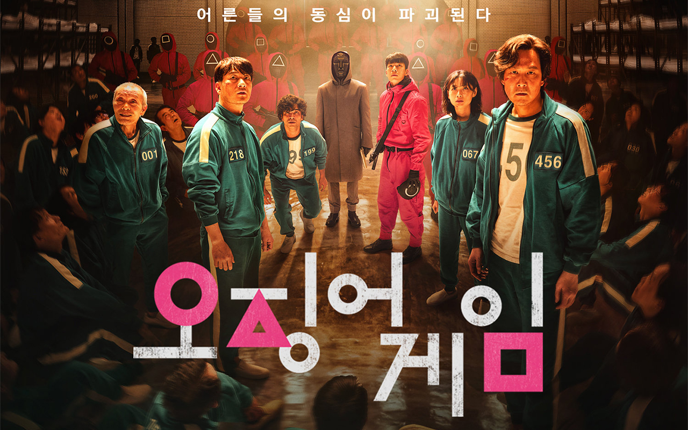

Рецензия на сериал "Игра в кальмара"
Дата публикации: 15.10.2021
Автор публикации:Lilian.li
«Игра в кальмара» (Squid Game) – на сегодняшний день самый обсуждаемый сериал, который возглавил общемировой рейтинг стримингового сервиса Netflix. Всего за 10 дней триллер о выживании занял первое место в 90 странах, став первым южнокорейским сериалом, который смог привлечь внимание зрителей со всего мира. В нем взрослые люди играют в детские игры, пытаясь сохранить свою жизнь и выиграть огромный денежный приз.

К популярности сериала можно относиться критически, считая его сценарий переоцененным и не самым оригинальным сюжетом о выживании. Новый хит от Netflix действительно вызывает ассоциации с уже существующими фильмами, а шоураннер сериала Хван Дон Хек честно признается, что он черпал вдохновение из манги «Королевская битва» (Battle Royale), «Игра лжецов» (Liar Game) и «Кайдзи» (Gambling Apocalypse: Kaiji).
При большом желании придраться, самые внимательные зрители без труда смогут обнаружить не только сходство с комиксами, но также найти ряд мелких недочетов и противоречий (их без спойлеров не перечислишь).
Однако эти замечания вряд ли испортят общее впечатление от интригующей истории, которую в англоязычных отзывах относят к категории «enjoyable to watch». И правда, сериал не на шутку увлекает, его хочется смотреть без пауз, чтобы поскорее увидеть разнообразие испытаний, приготовленных для отчаявшихся персонажей (к слову, на YouTube можно найти десятки роликов с интересным разбором деталей, указывающих на важные нюансы сюжета – их намного больше, чем видимых нестыковок).
Как и все корейское кино, смотреть сериал лучше на языке оригинала с субтитрами – так не теряются интонации актеров, которые важны для передачи эмоций (это подтверждает режиссер Тайка Вайтити, который твитнул такой совет: «You don’t have to watch Squid Game dubbed in English»).